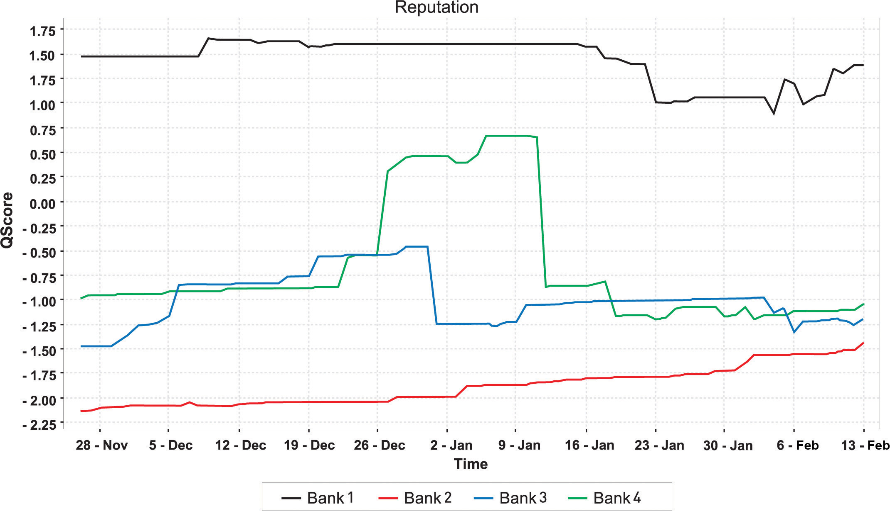

Using a tool to measure one company’s reputation will give an indication of consumer sentiment, but it is far better to be able to compare that to competitors’ reputations. Using the online reputation management (ORM) monitoring and analyzing tool BrandsEye, the online reputation of four prominent South African banks was measured for the period November 26, 2006, to February 13, 2007.
Banks, and particularly their customer service, generate a lot of conversation, both online and off. BrandsEye was used to monitor mentions of the banks, to filter out duplicate mentions, and to generate a daily reputation score for each bank that could then be measured over time.
Figure 11.3 Graph Showing the Differences in Reputation of Four South African Banks
Changes in reputation, especially jumps such as the one experienced by Bank 4 just after December 26, can then be correlated to real-world events.
Bank 1 has superior customer service levels, and this is shown in the reputation score. However, toward the end of January, Bank 1 experienced a backlash from local government when attempting to launch a public-service campaign. The offline media coverage was far reaching, loud, and venomous, and within a short while the effects on the bank’s reputation were expected to be seen online. On the contrary, what actually happened was quite surprising. While the ORM tool picked up a number of negative mentions, these were in fact directed at local government for seemingly coercing the bank into withdrawing their campaign.
With a temporary dip in reputation score, the result was that throughout February, Bank 1’s online reputation grew stronger and stronger. Having their hand forced created a sense of public empathy, with the majority of criticism deflected away from the bank itself. Furthermore, when critics of the bank’s withdrawal voiced their opinions, a number of respondents actually jumped to its defense. With an already high online reputation score, not only did Bank 1 survive what could have potentially been a major crisis, but its reputation thrived as a result.
Bank 2, on the other hand, had the lowest reputation score throughout the investigation, although tending to the positive toward the end of the test period. Their poor customer service levels, as perceived by their online customers, were negatively affecting their online reputation.
In fact, one of South Africa’s most prolific online forums had an established tradition of using Bank 2 as an example of what was wrong with the industry in general. A comment by one forum member went, “Bank 2 is evil! Evil! Evil! Evil!” The majority of Bank 2’s negative mentions originated from this particular forum, and interestingly, where it was criticized, Bank 1 was offered as a suitable alternative.